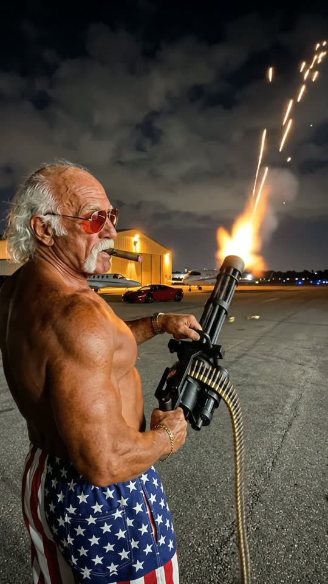
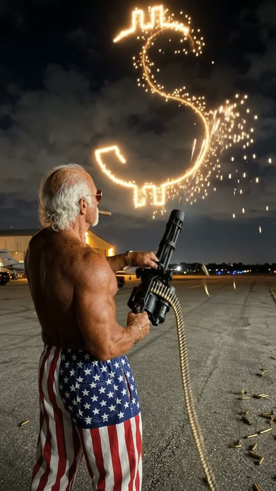
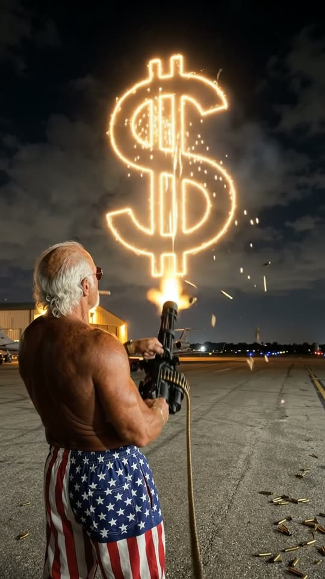
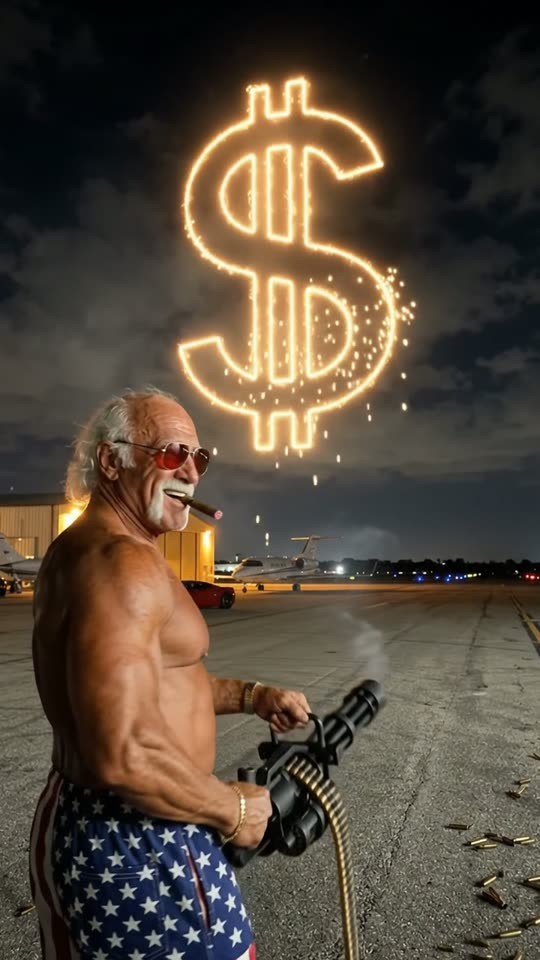

Free prompt pack
One minigun.One dollar sign.
An old bodybuilder on a night runway writes a dollar sign across the sky with tracer fire. One still image and one prompt that draws it stroke by stroke.
Both prompts, in the order I ran them. Flick the cash off each one. Tap the sky to fire.
The first frame
He is already firing. This image is frame one: from just behind his right shoulder, the minigun aimed at the night sky and the tracer stream already starting its curve.
Watch out
Flow checks faces against famous people. Wild white hair, a white horseshoe mustache and flag pants added up to a refusal. A crew cut and a short beard get through.

The prompt 130 words
Real handheld night photo taken from just behind the right shoulder of an elderly bodybuilder on an airfield tarmac. He is about seventy, shirtless and enormously muscular, deep-tanned wrinkled skin over huge shoulders and veined arms, short silver-white hair in a neat crew cut, a short trimmed white beard, dark sunglasses and a lit cigar, gold watch and gold bracelets, baggy stars-and-stripes pants. He holds a heavy black six-barrel rotary minigun at his hip, aimed up into the dark sky, a long belt of brass cartridges hanging from it, and a stream of bright orange tracer fire has just started a glowing curve high in the sky. Behind him, a lit hangar, a parked private jet and a red sports car; runway lights on the horizon. Real photo, natural colour.
The dollar sign
Ten seconds, two strokes, one grin. Add the image as the reference, set 10 s, 9:16, 720p and audio on, and paste the prompt whole.
- 0–4.0 sthe stream draws the S
- 4.0–6.0 sone line straight through it
- 6.0–7.0 sthe barrels spin down
- 7.0–10 she turns and grins as it falls apart
Watch out
Describe the sign as shapes, never as a symbol to write. Ask for a dollar sign and you get a scribble, or letters next to it.
Fragments



The prompt 1116 words
FORMAT Real handheld night video, seen as the finished exported video file: the full picture edge to edge, nothing on top of it. Whatever records the picture is never in frame. One continuous take in real time, no cuts. Vertical frame. The video runs at 24 fps. No frame is repeated. Real time, 1x speed, never slow motion. SCENE On an airfield at night, an elderly bodybuilder in stars-and-stripes pants fires a minigun into the sky and, with the glowing stream of orange tracer fire, draws a giant dollar sign in the dark: first a big S-shaped curve, then one straight vertical stroke through its middle. The glowing sign hangs in the sky like a sparkler drawing. He stops, looks back over his shoulder at the camera and grins around his cigar. The stream is already drawing the top of the S in the first frame. The take ends on his grin and the glowing dollar sign behind him. REFERENCE IMAGE Use it for the man, his face, his body, his clothes and jewellery, the minigun, the airfield, the jet, the hangar, the red car and the night light. He matches it exactly, zero drift, no smoothing. The action is described below. THE MAN One real elderly man, about seventy, a lifelong bodybuilder: shirtless, enormously muscular, deep-tanned wrinkled skin over huge shoulders, a broad back and veined arms; short silver-white hair in a neat crew cut; a short trimmed white beard; dark sunglasses; a fat lit cigar in the corner of his mouth; a gold watch and gold bracelets; baggy stars-and-stripes pants. A real person with real skin, never a cartoon, never a mask, never smooth CGI skin. THE MINIGUN AND THE STREAM A heavy black six-barrel rotary minigun held at his hip with both hands, a long belt of brass cartridges with orange tips hanging from it and swinging. When it fires, the barrels spin and a continuous stream of bright orange tracer fire leaves the muzzle and climbs high into the sky. Where the stream reaches, it leaves a glowing golden-orange trail that hangs in the air like a sparkler drawing for several seconds and then breaks into falling sparks. He steers the stream by turning the gun, so the trail draws exactly what the barrels point at. THE DOLLAR SIGN Drawn in the sky in two strokes, large, high above the horizon at x 30-75%, y 8-45%: first one smooth S-shaped curve, top to bottom; then one straight vertical line from above the S to below it, through its middle. Nothing else is drawn: no other letters, no words, no numbers. LOCATION MAP The camera is just behind his right shoulder, at his shoulder height, looking up past him at the sky. Frame-left and bottom: his right shoulder, his back and the side of his head with the short silver hair, the beard and the cigar; the minigun angled up at frame-right of him. Behind and to the side: the flat dark tarmac, a lit hangar at frame-left, a parked private jet and a red sports car, runway lights along the horizon at y 55%. Above: the dark night sky, where the sign is drawn. FIRST FRAME Already moving: his back and right shoulder at x 0-55%, y 55-100%, the side of his head at y 55-68%; the minigun aimed up at 45 degrees from his hip toward frame-right, the cartridge belt hanging; the orange stream climbing from the barrels into the sky and the top curve of the S already glowing at x 45-70%, y 8-20%; the horizon lights at y 55%. Instant read: an old bodybuilder is writing in the sky with a minigun. No delayed reveal. CAMERA Handheld at shoulder height behind him, almost still, a small natural shake with the recoil. It tilts up slightly as the sign is drawn, and it never cuts, never zooms, never circles him, never jumps to his face. His shoulder and head stay in the lower left of the frame from the first second to the last. ACTION TIMING 0–4.0 s — The barrels spin and roar; the orange stream sweeps and draws the S: the top curve, the middle bend, the bottom curve, its glowing trail hanging in the sky behind it; spent shell casings spray out of the gun and bounce on the tarmac; the cartridge belt jerks into the gun. 4.0–6.0 s — He tips the barrels to the top of the S and pulls the stream straight down through its middle to below it: a complete glowing dollar sign hangs in the sky. 6.0–7.0 s — He lets go of the trigger: the barrels spin down and stop; smoke drifts from them; the sign glows. 7.0–10 s — He turns his head over his right shoulder toward the camera, takes the cigar from his mouth and grins wide through his short white beard; behind him the dollar sign slowly breaks into falling golden sparks. Hold to the last frame. PHYSICS AND SCALE Real weight and recoil: his arms and back muscles flex and shudder with the gun, his feet stay planted. The trail hangs where the stream passed and only fades slowly; it never moves on its own. Casings fall with gravity and bounce. The sign is huge and far above, the size of a building in the sky. Nothing morphs: one man, one gun, one dollar sign. LIGHTING Night: the hangar's white light from frame-left and the runway lights; the orange muzzle flash and the glowing trail light his back, his silver hair and his face in flickering orange. No other light. AUDIO No music, no score, no narration, no subtitles. A deafening electric roar from the spinning barrels that makes the mic clip, the clatter of casings on the tarmac, the whine of the barrels spinning down, then quiet: wind, a distant jet engine idling, the crackle of sparks falling, and his short deep laugh. No words. LOOK Real handheld night footage, seen as the finished exported file: crisp detail, digital noise in the dark sky, the highlights of the trail clipping bright, natural colour, no colour grade, no teal-and-orange, no film grain, no lens flare, no slow motion. No camera app interface: no shutter button, no gallery thumbnail, no record button, no icons, no timer, no recording dot, no frame lines. POSITIVE LOCKS Exactly one man and one minigun; the only thing drawn in the sky is one dollar sign. The camera stays behind his shoulder. No captions, no subtitles, no on-screen text, no watermark, no logos, no letters or words anywhere, nothing on top of the picture. ONE MAN. ONE MINIGUN. ONE DOLLAR SIGN. ONE GRIN. NO CUTS. NO INTERFACE. NO SLOW MOTION. NO MUSIC.
Rule 01
Write it as strokes
One S-shaped curve, then one straight line through its middle. The model draws shapes far better than it writes symbols.
Rule 02
Start it firing
The stream is already drawing the top of the S in frame one. A gun that still has to start spends the clip starting.
Rule 03
Nobody famous
Add up his features before you hit generate. If they spell out a celebrity, change the hair and the beard and keep the rest.
That's the whole build
Now go writeyour own sky.
If yours works, send it over. I read every DM and the good ones end up on the account.
@martiiifons